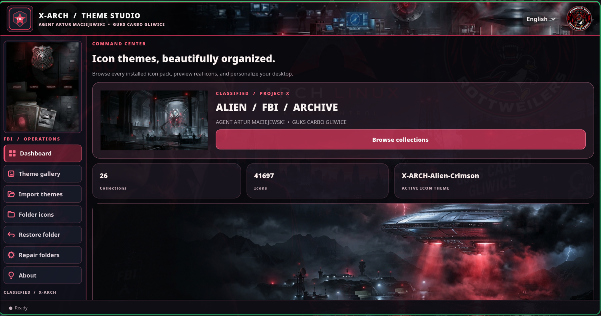
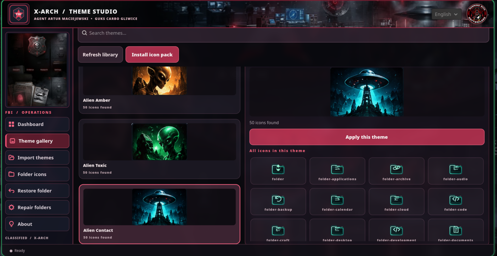

PUBLIC BETA · v0.1.2X-ARCH
X-ARCH
THEME STUDIO
A Linux desktop tool for exploring icon themes and customizing individual folder icons, built with Python, GTK4, and Rust.
System-wide theme integration is still being refined. Compatibility has not been verified across every Linux distribution.